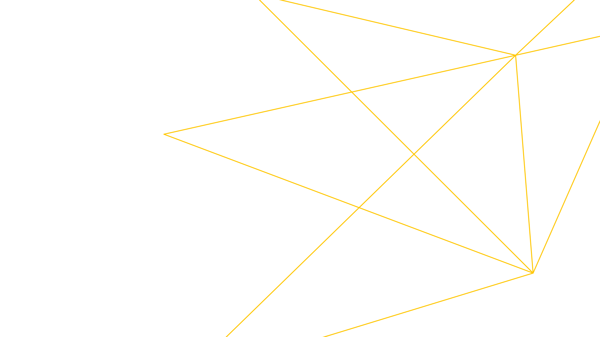

Szolgáltatások 2. megoldás · Csapatfejlesztés
Hatékonyabbá tesszük — ugyanaz a csapat, többszörös teljesítmény
Felmérjük a belső dokumentációs csapat időigényes feladatait. Docs-as-code megoldásokkal és AI-val szervezzük újra a tartalomkészítést, szakértői ellenőrzéssel. Az elkészült rendszert átadjuk a csapatának.
Már megvan a terméket ismerő szövegírói csapat. A szűk keresztmetszet a folyamat: a forrásanyagok szétszórtan, eltérő formátumokban találhatók, minden oldalt kézzel formáznak, az „AI-használat” pedig annyit jelent, hogy valaki szöveget másol egy chatbotba. Újraépítjük a tartalomgyártást, majd átadjuk a működő rendszert. Az eszközök, sablonok és tudás a csapatánál maradnak.
Önnek való, ha
- szövegírói több időt töltenek formázással és konverzióval, mint írással
- örökölt CMS-, DITA- vagy FrameMaker-rendszerhez kötődik, és tartalomvesztés nélkül váltana docs-as-code-ra
- a vezetés nagyobb teljesítményt vár az AI-tól, de nincs felelőse a biztonságos és megismételhető működésnek
- 01Audit · jellemzően 2 hétMegmérjük, mennyi időt igényelnek a jelenlegi folyamat lépései. Megmutatjuk, mi automatizálható, mi nem, és mekkora előnyt jelentene a változtatás.
- 02Építés · jellemzően 4–8 hétStílusútmutató, strukturált sablonok, konverziós szkriptek, promptkönyvtár és ellenőrzési pontok — a már használt eszközökbe integrálva.
- 03Próbaprojekt · mért eredményekEgy tényleges tartalomkészítési feladatot az új pipeline-nal végzünk el. A teljesítményt és a minőséget az audit során mért kiinduló állapottal vetjük össze.
- 04Átadás · végleg az ÖnéÁtadjuk a kódot és az üzemeltetési útmutatókat, a csapatot pedig betanítjuk. Nincs szükség licencre, és önállóan folytathatják a munkát. Igény esetén támogatási keretmegállapodást is kínálunk.
Több mint általános AI-tanácsadás
Műszaki szövegírók vagyunk, akik pipeline-okat is építenek. A dokumentációt a gyakorlatból ismerjük, nem csak elméletből. Az általunk tervezett munkafolyamatokkal már valódi dokumentációs projekteket vittünk végig, valódi határidőkre — a saját munkánkban is.